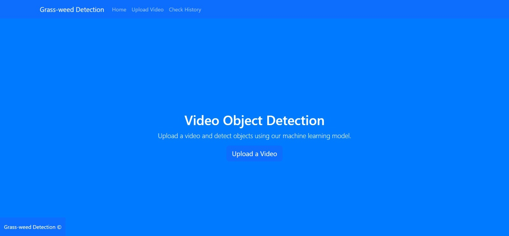
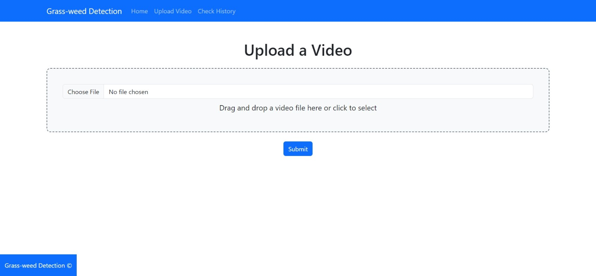

It gives me immense pleasure to share the details of a groundbreaking project I have had the opportunity to work on along with my talented team. The project involved detecting grass-weeds amidst a dense field of grass, a challenging task that tested our skills and persistence.
We used the cutting-edge technology of object segmentation, specifically, "You Only Look Once" Version 8 (YOLOv8). This technology has left us in awe with its extraordinary capabilities and precision. Even in scenarios where traditional object detection would struggle due to the high density of the grass, object segmentation using YOLOv8 proved incredibly accurate.
To better understand the effectiveness of our model, we've prepared a video that shows a comparison between the input and output of our system. Observe the 'before' scenario - a dense field of grass with indiscernible weeds, and the 'after' - where our model, integrated with the Flask Framework, accurately identifies and highlights the weeds.
Here are some screenshots from the output video demonstrating the precision of our model:
Furthermore, we integrated the trained model with the Flask Framework, enhancing its versatility. Here are some screenshots of our Flask Frontend framework.


I am extremely grateful to Professor Sina K. Maram for his invaluable guidance throughout this exciting journey. Our exploration into the world of object segmentation using YOLOv8 technology has opened our eyes to its immense potential, and we look forward to further research and development in this field.
For more technical details about our project, feel free to check out my Github repository.
Your feedback matters a lot!